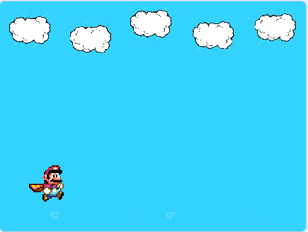
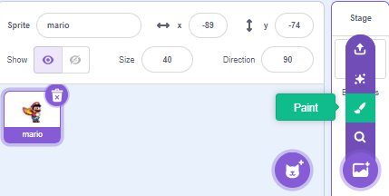
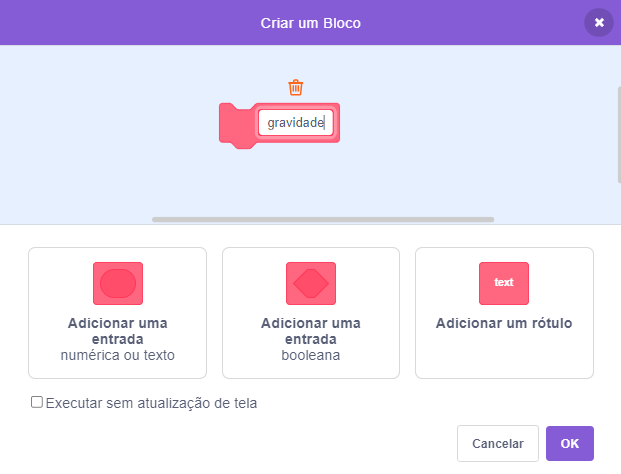
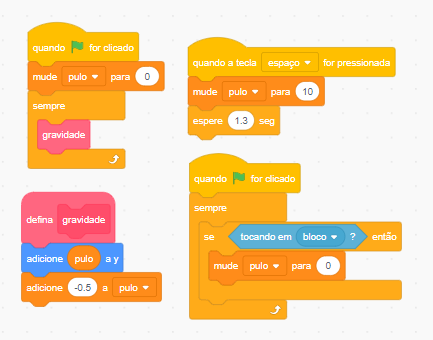

Primeiros passos criando o jogo:
Através de capturas de
tela irei mostrar o passo a passo para que você possa criar o seu jogo. Se você ainda não conhece
a plataforma do Scratch ou não tem familiaridade, comece por aqui primeiro, e só depois vá para o
código do jogo, combinado?!
Vamos começar!
1º: Apague o gatinho clicando sobre a lixeira no canto superior direito do ator e renomeie o arquivo o nosso arquivo para "Jogo_do_Mario" A barra para renomear o arquivo se na parte superior da página ao lado de Editar.
2º: Importe o gif do personagem para dentro do Scratch. Se você não sabe como fazer isso, clique
aqui e aprenda sobre a plataforma Scratch primeiro.
Meu ator do Mário já está importado e disponível na minha lista de atores.

Inserindo os blocos de movimento:
3º: O bloco de código a seguir é para que o ator do Mário consiga se movimentar para a esquerda e para a direita. Lembrando que as cores dos bloquinhos são para ajudar a nos localizar na página: blocos de eventos são amarelos, blocos de controle laranja, sensores azul claro e por ai vai... Cada pecinha tem a cor correspondente ao seu bloco.

4º: Adicione ao código os blocos 'próxima fantasia' e 'aponte para a direção 90'. Mas para que o aponte para a direção funcione corretamente, clique na opção 'direção' que fica em baixo do palco e selecione as duas setinhas que estão juntas. Se esse processo não for feito, o seu ator irá andar de ponta cabeça.


Diminua o tamanho do Mário para 30, assim ficará melhor para jogar. Feito isso vamos montar o cenário do jogo, que terá vários atores.
Desenhando o Cenário:
5º Clique para pintar o cenário. Assim que o editor do cenário abrir, converta para btmap e depois renomeie como 'principal'.

6º: Selecione o balde de tinta e uma cor para reprensentar o céu em 'preencher'. Agora basta clicar na tela em branco para pintar o cenário.

7º: Importe a nuvem para a nossa lista de atores para que possamos adicioná-la ao nosso cenário e deixá-lo mais bonito. Após importa-la, vamos diminuir o seu tamanho. Selecione a setinha nas ferramentas, clique com o mouse no canto superior esquerdo, segure e arraste sobre todo o desenho até que a nuvem toda esta selecionada.

8º: Diminua o seu tamanho utilizando as bolinhas laterais até o tamanho desejado. Para copiar clique na opção de 'copiar' e depois 'colar'. Reposicione a nova nuvem no cenário. Aqui eu fiz 5 cópias para que o cenário não fique tão poluido.

Agora o palco se encontra desta maneira:
9º: Vamos adicionar os bloquinhos para fazer o chão. Importe-o nos atores assim como fizemos com a nuvem e já diminua o seu tamanho. Copie e cole vários bloquinhos um ao lado do outro até você obter esse resultado:
Por enquanto vamos deixar o cenário assim, mas daqui a pouco adicionaremos mais atores ao jogo.
Continuando os movimentos do Mário
Os próximos blocos de código é para que o mário sempre ande sobre os blocos. Primeiro, posicione o Mário em cima dos bloquinhos e veja o valor de y abaixo do palco:

Utilizaremos o valor de y no nosso código. Pegue os blocos de código nessa seqência: 'when flag clicked' (quando a bandeira for clicada), 'foreve' (sempre), 'if then' (se então), 'touching mouser-point' (tocando em ponteiro do mouse), 'set y to' (mude y para). No lugar de 'mouser-point' coloque 'bloco', que é referente aos bloquinhos do chão. Confira se o valor que esta em 'set y to' é o mesmo do y que se encontra em baixo do palco.

Agora o Mário está andando sobre os bloquinhos.
O próximo bloco de código é para fazer com que o ator pule.

Vamos replicar a nuvem agora para ficar várias nuvens no nosso cenário. Clique na setinha como na imagem, selecione todo o desenho: segure o cursor do mouse e arraste sobre o desenho.

Diminua o tamanho na nuvem pelas bolinhas laterais até o tamanho desejado. Agora para copiar clique na opção de 'copy' e depois 'paste' (copiar e colar). Reposicione a nova nuvem no cenário. Aqui eu fiz 5 cópias para que o cenário não fique tão poluido.

Agora o palco se encontra desta maneira:
Vamos adicionar os bloquinhos para fazer o chão. Importe-o nos atores assim como fizemos com a nuvem e já dimnua o seu tamanho. Copie e cole varios bloquinhos um ao lado do outro até você obter esse resultado:
